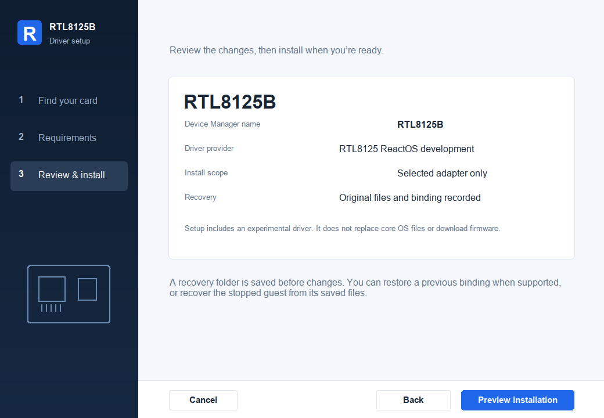

Linux r8169 → Native NDIS 5.1 · Updated 24 October 2026 · America/Sao_Paulo
RTL8125 → ReactOS
Implementation report
Target: RTL8125A/B · PCI 10ec:8125 · native i386 NDIS 5.1. Source implementation and validation are separate.
100%
Source implementation · M00–M09Every scoped code criterion is complete. Tests and M10 hardware qualification are separate.i386
Native installer and driver builtNative setup, operational driver and exact-device INF are built. GCC and package checks passed.
0%
Physical RTL8125 qualificationOperational guest installation, real IRQ/DMA/traffic and hardware power/reset testing remain pending.
Implementation complete. M00–M09 are 100% implemented. The operational candidate requires a rebuilt ReactOS NDIS module with the three supplied compatibility patches, plus separately acquired firmware. This is an unqualified candidate, not verified working Ethernet. MSVC execution, operational guest installation and physical-card validation remain pending.
Native installer implemented: per-device setup, firmware and OS checks, progress and recovery. Your confirmed card is named RTL8125B in setup and the Device Manager configuration.
Implementation ledger
Scoring revised at your request: tests never reduce implementation. Code completion uses explicit source criteria. Original acceptance gates remain separate. M10 has no implementation weight because it is entirely hardware qualification.
| Milestone | Deliverable | Code | Status / remaining work |
|---|
| M00 | Portable chip and descriptor core | 100% | Complete |
| M01 | Native NDIS registration and lifecycle | 100% | Complete; latest OID-width fix included |
| M02 | Assigned PCI resources and bounded MMIO | 100% | Code complete; real-card validation pending |
| M03 | MAC, EPHY, PHY and firmware bring-up | 100% | Source complete; physical validation pending |
| M04 | DMA adapter, common buffers and ownership | 100% | Source complete; physical validation pending |
| M05 | Transmit path | 100% | Source complete; physical validation pending |
| M06 | Receive path and packet filters | 100% | Source complete; physical validation pending |
| M07 | Interrupt recognition and bounded DPCs | 100% | Source complete; physical validation pending |
| M08 | Reset, hang detection, halt and power | 100% | Source complete; independent validation pending |
| M09 | Driver build, exact INF and installation | 100% | Source complete; independent validation pending |
| M10 | Physical network qualification | Validation only | Physical network qualification pending |
Source completion and separate acceptance gates
Checked code criteria describe implemented source. Checked acceptance gates describe the original evidence requirements. They are independent scores; hardware tests do not change code completion.
M00100% implementedAcceptance 100%Portable chip and descriptor core
Allocation-free C++17 values; exact PCI family and XID selection; offline descriptor images only.
Implementation:
- Implemented — PCI/XID and firmware-name selection
- Implemented — Offline descriptor formats and bounds
- Implemented — Shared receive completion decoder
- Implemented — Portable allocation-free module/build interfaces
Original acceptance gates and evidence
- Passed — Port RTL8125A/B XID rules and firmware filename dependencies; refuse wrong devices, all-ones MMIO and unknown MACs.
- Passed — Encode 16-byte little-endian legacy TX/RX descriptor images with FS/LS/EOR and OWN clear; validate sizes, ring index and 64-bit address interval.
- Passed — Decode receive OWN/error/fragment state and validate actual DMA capacity before subtracting FCS; no packet pointers escape.
- Passed — Pass CPU golden-vector and malformed-boundary checks under ASan/UBSan; compile portable code for GCC 13 i386 and AMD64.
Reference: r8169_main.c: rtl_init_one, rtl8169_get_mac_version, rtl_desc_bit, TxDesc/RxDesc, rtl_rx
src/core/chip.cpp · src/core/descriptor.cpp · tests/core_tests.cpp · evidence/host-tests.txt · evidence/i386-build.txt · evidence/amd64-build.txt
Native NDIS registration and lifecycle
Serialized NDIS 5.1 miniport using real ReactOS headers/import libraries; C linkage and NT calling conventions.
Implementation:
- Implemented — Native NDIS registration and callback ABI
- Implemented — Per-adapter construction and failed-init cleanup
- Implemented — Required OID replies, including 64-bit statistic negotiation
- Implemented — Driver-object wrapper ownership and unload handling
Original acceptance gates and evidence
- Passed — Build and link DriverEntry and the required NDIS callback table against the pinned ReactOS SDK; no synthetic DDK headers.
- Passed — Construct device-owned state; accept Ethernet medium; reject unsupported hardware and every incomplete initialization path without leaked resources.
- Passed — Implement required discovery/capability OIDs with strict input/output lengths, truthful link state and no unsupported offload advertising.
- Passed — Exercise registration, initialization failures and halt in a ReactOS guest; do not report adapter success before later hardware gates exist.
Reference: r8169_main.c: rtl_init_one, rtl_open, rtl_remove_one; ReactOS e1000/ndis.c
src/reactos/miniport.cpp · src/reactos/adapter.hpp · src/core/oid.cpp · tests/miniport_contract_tests.cpp · tests/oid_tests.cpp · cmake/native.cmake · evidence/m01-summary.txt · evidence/integration-native-build.txt · evidence/integration-native-contracts.txt · evidence/integration-native-pe.txt · evidence/integration-manifest.json · evidence/m01-guest-results.txt · evidence/m01-guest-kernel.txt · evidence/m01-guest-launch.txt · evidence/m01-guest-hashes.txt · tests/miniport_guest_kernel.cpp · tests/miniport_guest_runner.cpp · evidence/m01-review.txt
Remaining: Original M01 gates complete. Actual operational PCI PnP networking, hardware resources and packet-path qualification remain in later milestones.
M02100% implementedAcceptance 75%Assigned PCI resources and bounded MMIO
NdisReadPciSlotInformation, NdisMQueryAdapterResources and NdisMMapIoSpace; adapter-owned mapping with checked offsets.
Implementation:
- Implemented — PCI/resource parsing and full-aperture overlap rejection
- Implemented — Assigned BAR mapping and typed bounded MMIO
- Implemented — Native TxConfig/XID read, family selection and rejection
- Implemented — Cleanup, bounded diagnostics and read-only VFIO preflight
Original acceptance gates and evidence
- Passed — Parse bounded assigned resource lists and match PCI 10ec:8125; validate BAR type, aperture, 64-bit addresses and resource availability.
- Passed — Map only the assigned register aperture; provide typed 8/16/32-bit MMIO and posted-write ordering; preserve native addresses on i386.
- Pending acceptance — Read TxConfig through the owned mapping and identify the actual XID; record A/B selection and reject removed or unknown hardware.
- Passed — Verify partial initialization unwind, wrong resource types, short apertures and mapping failures with native contracts.
Reference: r8169_main.c: rtl_init_one, pcim_iomap_regions, rtl_pci_commit; ReactOS e1000 resources
src/core/resources.cpp · src/reactos/resources.cpp · tests/resources_tests.cpp · tests/resources_native_tests.cpp · evidence/m02-native-contracts.txt · evidence/integration-host-tests.txt · evidence/integration-native-contracts.txt · src/core/probe_log.cpp · src/tools/probe_collect.cpp · src/tools/vfio_check.cpp · evidence/m02-linux-device-probe.txt · evidence/m02-vfio-candidate-check.txt · evidence/m02-validation-media.txt · validation/physical/VM_SETUP.txt · validation/physical/rtl8125-probe.inf · validation/physical/qemu-vfio-template.json · evidence/m02-relaunch-review.txt · evidence/m02-overlap-tests.txt · evidence/m02-vfio-status-tests.txt
Remaining: Implementation complete. Separate validation: run the native read-only PCI/XID probe on an actual RTL8125 in ReactOS. Only the active host NIC is present; no passthrough or disconnection has been authorized after the connectivity impact was explained.
M03100% implementedAcceptance 75%MAC, EPHY, PHY and firmware bring-up
Bounded OCP/EPHY/MDIO operations and passive workers replace Linux phylib, firmware loader, delays and workqueues.
Implementation:
- Implemented — Exclusive bounded indirect register services
- Implemented — Complete A/B MAC/reset/OOB/ASPM and PHY sequencing
- Implemented — Bounded firmware interpreter and native fixed-name loader
- Implemented — Autonegotiation, native MAC identity and link management
Original acceptance gates and evidence
- Passed — Port indirect register primitives with timeouts, checked MMIO access, explicit failures and serialized ownership; no unbounded busy-wait.
- Passed — Port exact A/B reset, out-of-band exit, EPHY, PHY and common MAC sequences in Linux order, including legacy descriptor mode and link/EEE policy.
- Passed — Implement bounded firmware format/opcode validation and execution with step/time budgets and fixed-name passive NT file acquisition; document separate firmware redistribution terms.
- Pending acceptance — Implement autonegotiation and truthful 10/100/1000/2500 Mb/s link reporting; verify sequencing and failure cleanup in a device model and then on the selected card.
src/hardware/registers.cpp · src/hardware/firmware.cpp · src/hardware/phy.cpp · src/reactos/hardware_init.cpp · tests/hardware_tests.cpp · tests/firmware_file_check.cpp · tests/dma_native_tests.cpp · cmake/hardware.cmake · evidence/m03-summary.txt · evidence/m03-firmware-format.txt · evidence/m03-firmware-terms.txt · evidence/integration-host-tests.txt · evidence/integration-native-contracts.txt · src/hardware/device.cpp · tests/hardware_device_tests.cpp · evidence/m03-finish-summary.txt · evidence/m03-finish-hashes.txt · evidence/m03-finish-device-tests.txt · evidence/m03-finish-native-contracts.txt
Remaining: No remaining M03 source gap. Physical A/B initialization/link validation remains pending. The completed M07 interrupt and M08 recovery modules are integrated into the operational build.
M04100% implementedAcceptance 75%DMA adapter, common buffers and ownership
Initialize the existing NDIS DMA adapter, allocate fixed common buffers at PASSIVE_LEVEL and copy packets; no scatter/gather fast path.
Implementation:
- Implemented — NDIS DMA adapter and address-mask handling
- Implemented — Common-buffer rings, arenas and unwind ownership
- Implemented — Live descriptor publication/completion with native barriers
- Implemented — Complete hardware-drain and callback-retirement integration
Original acceptance gates and evidence
- Passed — Use NdisMInitializeScatterGatherDma before NdisMAllocateSharedMemory; initially request 32-bit DMA and reject any returned range outside the selected DMA mask.
- Passed — Allocate and own aligned TX/RX rings plus fixed packet buffers; validate logical bus addresses, sizes and every allocation/unwind path.
- Passed — Implement live descriptor access and native barriers: populate payload/address first, publish OWN last, acquire completed status before reading payload; never treat offline images as live rings.
- Pending acceptance — Prove DMA stopped before freeing buffers, including failed reset, partial startup and removal; verify ownership under wrap, timeout and late completion.
src/reactos/dma.hpp · src/reactos/dma.cpp · src/core/descriptor_bits.hpp · tests/dma_native_tests.cpp · evidence/m04-summary.txt · evidence/m04-native-pe.txt · evidence/integration-native-build.txt · evidence/integration-native-contracts.txt · src/reactos/hardware_io.cpp · evidence/m04-finish-native-tests.txt · evidence/m04-finish-hardware-tests.txt
Remaining: M04 source complete: actual A/B quiesce, PCI containment/drain, explicit bus-master enable and M08 retirement integration. Physical DMA validation remains separate; full runtime/OS-wrapper integration awaits M08/M09 handoff.
M05100% implementedAcceptance 75%Transmit path
MiniportSend copies a bounded NDIS buffer chain into a reserved common buffer and completes accepted pending packets exactly once.
Implementation:
- Implemented — Bounded packet gathering and RTL8125 padding
- Implemented — TX ring reservation, publication and doorbell
- Implemented — Backpressure and exactly-once pending completion
- Implemented — Production Send/service/lifecycle wiring with prerequisite guards
Original acceptance gates and evidence
- Passed — Validate and gather input buffer chains; apply minimum Ethernet padding and Linux RTL8125 UDP/PTP padding quirks with checked packet parsing; software checksums only.
- Passed — Reserve ring slots, write frame and descriptor, publish OWN, and use the RTL8125 16-bit TxPoll doorbell at 0x90.
- Passed — Handle completion, wrap and ring-full backpressure without double completion, premature buffer reuse or loss of packet ownership.
- Pending acceptance — Verify Ethernet/ARP/IPv4 packet bytes at a peer and measure sustained TX; stress ring exhaustion and pending completion during reset.
src/core/packet.cpp · src/core/filter.cpp · src/core/receive.cpp · src/reactos/datapath.cpp · tests/packet_tests.cpp · tests/datapath_native_tests.cpp · cmake/datapath.cmake · evidence/m05-summary.txt · evidence/m05-host-tests.txt · evidence/m05-native-contracts.txt · evidence/m05-native-pe.txt · src/reactos/adapter.hpp · src/reactos/datapath_adapter.cpp · src/reactos/miniport.cpp · evidence/m05-production-summary.txt · evidence/m05-production-guest-kernel.txt · evidence/m05-production-guest-launch.txt · evidence/m05-production-hashes.json
Remaining: No remaining M05 source gap: real production Send/OID/stat/service/lifecycle dispatch is implemented. Physical TX/peer/reset/throughput validation is separate. Missing M07 IRQ and M08 recovery keep Initialize fail-closed.
M06100% implementedAcceptance 75%Receive path and packet filters
Preallocated NDIS packet/buffer pools; initial NdisMIndicateReceivePacket with NDIS_STATUS_RESOURCES forces synchronous consumption/copy.
Implementation:
- Implemented — Budgeted RX validation, copying and rearm
- Implemented — Preallocated synchronous NDIS receive indication
- Implemented — Packet-filter/multicast OIDs and register programming
- Implemented — Production RX/OID/activation/lifecycle wiring with prerequisite guards
Original acceptance gates and evidence
- Passed — Drain completed descriptors with a bounded budget; validate flags, capacity and frame policy before copying or indicating data.
- Passed — Implement the synchronous receive indication contract and packet-pool ownership; hardware buffers remain reserved until copying is complete.
- Passed — Implement directed/broadcast/multicast/promiscuous filters and multicast list OIDs; disable unsupported VLAN/checksum/jumbo offload features.
- Pending acceptance — Verify peer-to-guest frame bytes, dropped/error counters, ring wrap, fragmented or corrupt descriptors and overload without leaking packets.
src/core/packet.cpp · src/core/filter.cpp · src/core/receive.cpp · src/reactos/datapath.cpp · tests/packet_tests.cpp · tests/datapath_native_tests.cpp · cmake/datapath.cmake · evidence/m06-summary.txt · evidence/m05-host-tests.txt · evidence/m05-native-contracts.txt · evidence/m05-native-pe.txt · src/reactos/adapter.hpp · src/reactos/datapath_adapter.cpp · src/reactos/miniport.cpp · evidence/m05-production-summary.txt · evidence/m05-production-guest-kernel.txt · evidence/m05-production-guest-launch.txt · evidence/m05-production-hashes.json
Remaining: No remaining M06 source gap: real production RX/OID/service/lifecycle dispatch is implemented. Physical receive/overload/legacy-wrapper validation is separate. Missing M07 IRQ and M08 recovery keep Initialize fail-closed.
M07100% implementedAcceptance 50%Interrupt recognition and bounded DPCs
Use existing NDIS line-interrupt registration first. MSI is a conditional OS/platform dependency, not assumed available.
Implementation:
- Implemented — Assigned-route NDIS interrupt registration
- Implemented — Shared-line ISR mask/status/acknowledgement
- Implemented — Bounded DPC drains and race-safe rearming
- Implemented — Interrupt stop/removal and platform fallback handling
Original acceptance gates and evidence
- Pending acceptance — Verify ReactOS assigns a usable INTx route; register its resource through NdisMRegisterInterrupt and record actual delivery on the selected platform.
- Passed — Implement shared-line ISR recognition, 32-bit RTL8125 mask/status semantics at 0x38/0x3c, removal detection and correct mask/ack ordering.
- Passed — Bound DPC work, drain RX/TX/link events and rearm without lost-wakeup races, interrupt storms or polling-only success claims.
- Pending acceptance — Demonstrate correct delivery under load and concurrent stop. If INTx is unusable and MSI unsupported, explicitly track the required ReactOS PCI/HAL/NDIS patch as a separate prerequisite.
src/reactos/interrupt.hpp · src/reactos/interrupt.cpp · tests/interrupt_native_tests.cpp · evidence/m07-handoff.txt · evidence/m07-native-abi.txt · evidence/m07-source-audit.txt
Remaining: M07 source complete: assigned INTx owner, native ISR/private tracked DPC and passive link scheduling contract are integrated with the completed M08 worker and rundown. Actual IRQ delivery and platform MSI feasibility remain validation.
M08100% implementedAcceptance 75%Reset, hang detection, halt and power
Explicit adapter state machine with passive recovery and synchronized DIRQL/DPC/timer retirement.
Implementation:
- Implemented — Hang/reset state and recovery generations
- Implemented — ISR/DPC/timer/packet retirement fence
- Implemented — Power/shutdown and hardware state restoration
- Implemented — Failed initialization, reset and removal recovery paths
Original acceptance gates and evidence
- Passed — Implement MiniportCheckForHang and MiniportReset with bounded recovery, generation tracking and accurate AddressingReset semantics.
- Passed — Stop DMA and serialize ISR/DPC/timer callbacks before completing packets, releasing pools, deregistering interrupts or unmapping BARs.
- Passed — Implement required NDIS/NT power and shutdown behavior without blocking at DISPATCH_LEVEL; restore filters, PHY and ring ownership after reset.
- Pending acceptance — Stress failed initialization, disabled adapter, cable removal, pending TX, repeated resets, suspend/resume and removal with no late use-after-free.
src/reactos/recovery.cpp · src/reactos/recovery_cpu.cpp · src/reactos/miniport.cpp · tests/recovery_native_tests.cpp · tests/recovery_ndis_tests.cpp · evidence/m08-summary.txt · evidence/m08-recovery-contracts.txt · evidence/m08-ndis-contracts.txt · evidence/m08-source-manifest.json · evidence/m08-patch-manifest.json · evidence/m08-patch-apply.txt
Remaining: Source complete. Independent validation: rebuilt patched NDIS in an actual guest; SMP callback/CPU rundown, power IRPs, operational startup/Halt/unload and physical-card reset/removal. The external SDK and VM images were not modified.
M09100% implementedAcceptance 50%Driver build, exact INF and installation
Future operational networking .sys and exact-device demand-start INF. A fail-closed read-only probe binary now exists; operational driver packaging remains pending.
Implementation:
- Implemented — Operational-driver native build integration
- Implemented — Compiler/architecture-specific build inputs
- Implemented — Exact operational-driver INF/service binding
- Implemented — Operational install/remove/recovery packaging
Original acceptance gates and evidence
- Passed — Build/link the actual i386 .sys in the ReactOS toolchain; inspect imports, entry point, ABI and absence of C++ runtime dependencies.
- Pending acceptance — Verify the C++17 source on GCC 13 and MSVC 2022 separately; qualify any AMD64 native build separately from portable-library cross-compilation.
- Passed — Create exact RTL8125 INF/service binding and an explicit install/remove/recovery procedure without broad Realtek-family matches.
- Pending acceptance — Install, reboot, disable/enable and uninstall in an isolated ReactOS test system; retain logs and a recoverable setup.
cmake/driver_sources.cmake · cmake/native.cmake · cmake/package.cmake · packaging/rtl8125.inf · packaging/INSTALL.txt · packaging/BUILD.txt · packaging/FIRMWARE.txt · packaging/REACTOS_COMPATIBILITY.txt · packaging/reactos/CMakeLists.txt · evidence/m09-implementation.txt · evidence/m09-candidate-integrity.txt · Binaries/.build/m09-operational/package/rtl8125-i386-6b3797171995598e/BUILD_INFO.txt
Remaining: Source complete; operational i386 driver and native GUI installer published as an experimental candidate. Actual guest installation and physical qualification remain pending. Firmware is not bundled.
M10Validation onlyAcceptance 0%Physical network qualification
Real ReactOS hardware validation; CPU tests and emulated e1000 networking cannot satisfy this milestone.
Original acceptance gates and evidence
- Pending acceptance — Record ReactOS build, XID, firmware version, BARs, DMA ranges and actual interrupt mode for PCI 10ec:8125 revision 05.
- Pending acceptance — Complete DHCP, ARP, DNS, ping and bidirectional TCP/UDP against a peer; include 100 Mb/s, 1 Gb/s and 2.5 Gb/s where peer equipment permits.
- Pending acceptance — Run sustained transfer, ring exhaustion, reset and cable-replug tests; record CPU cost, packet loss and measured throughput for the copying design.
- Pending acceptance — Publish exact passing hardware/build combinations and unresolved limits; verify reboot and recovery without relying on the Linux driver.
Reference: Selected RTL8125 hardware and externally observed Ethernet traffic
Required target-wrapper patchset: 0001-ndis-halt-context.patch · 0002-ndis-callback-rundown.patch · 0003-ndis-device-power.patch. Apply these three canonical patches in order and rebuild the complete NDIS module. The older standalone Halt patch is a historical alias, not an additional patch. Compatibility and rebuild instructions. A build acknowledgment does not prove that a guest loaded patched NDIS.
Qemu-Lightning network support
VirtIO networking already exists in Qemu-Lightning’s manager and deployed binary. The manager’s “Paravirtualized disk & network” option selects virtio-net-pci and also changes disk devices; matching guest drivers are required. The existing ReactOS preset uses RTL8139 with user NAT. Shared-host virtual networking can keep Linux online, but it exercises a virtual NIC rather than this RTL8125 driver.
Source and deployed-binary audit. No Qemu-Lightning changes were necessary. No physical passthrough was launched or host NIC detached.
Design around the existing DMA APIs
The initial DMA design does not require a ReactOS source change. In the inspected source, NdisMInitializeScatterGatherDma establishes the DMA adapter; NdisMAllocateSharedMemory allocates common buffers from it. Its placeholder scatter/gather list size means we should avoid assuming a usable scatter/gather fast path. Fixed TX/RX DMA buffers and copying provide a direct path through the existing APIs. Native integration still needs verification.
Interrupt support is conditional. First use the assigned line-interrupt resource through NdisMRegisterInterrupt. If INTx works on this board, no interrupt-related OS patch is planned. If usable INTx is absent and the target build cannot deliver MSI, a separate ReactOS PCI/HAL/NDIS change becomes a prerequisite. The actual card advertises legacy INTA in its PCI configuration, which makes INTx worth testing but does not prove a working route. We have not established that an OS patch is necessary. Linux IRQ 41 is not proof of ReactOS interrupt routing.
The copying design costs CPU and memory bandwidth. Do not promise line-rate 2.5 Gb/s until measured. Initial scope is one queue, MTU 1500, software checksums and no VLAN/jumbo/TSO/RSS offload. The actual XID must select the A/B sequence; revision 05 alone is insufficient. First target is native i386; AMD64 portable compilation is separate from AMD64 driver qualification.
NDIS TX packet → checked copy + padding → common DMA buffer → legacy TX ring → RTL8125
NDIS RX packet ← synchronous indication ← checked copy ← common DMA buffer ← legacy RX ring
ISR recognizes/masks → bounded DPC drains → acknowledge/rearm
PASSIVE worker owns firmware, PHY delays, initialization and recovery
Linux mechanisms and native replacements
| Linux mechanism | ReactOS design | Boundary to verify |
|---|
pci_driver / net_device | NDIS 5.1 registration, Initialize/Halt/OID callbacks | ABI, capability honesty, deterministic unwind |
pcim_iomap_regions / readl / writel | Assigned NDIS resources, NdisMMapIoSpace, native register access | 64-bit resource addresses, aperture bounds, ordering |
dma_alloc_coherent / dma_map_single | NDIS DMA adapter and fixed shared common buffers | DMA mask, alignment, barriers, retirement before free |
sk_buff / ndo_start_xmit | Checked NDIS buffer-chain copying and pending send completion | Backpressure, UDP/PTP padding quirk, exactly-once completion |
NAPI / napi_gro_receive | Bounded DPC plus packet-pool indication with NDIS_STATUS_RESOURCES | Receive copy/indication lifetime, no retained hardware buffers |
request_irq / MSI | Existing assigned INTx resource and NdisMRegisterInterrupt first | Physical routing; MSI/OS patch only if actually required |
phylib / request_firmware / workqueues | Bounded PHY state machine, passive NT file I/O and worker | A/B sequences, firmware execution budget, IRQL restrictions |
rtl8169_down / reset / PM | NDIS reset/hang/power callbacks and adapter state machine | DMA, ISR, DPC, timer and packet retirement |
RTL8125B native installer
Download the ReactOS i386 installer package · Download source snapshot · Setup and compatibility guide · Independent installer checks.
Extract the package, keep its files together and open RTL8125-Setup.exe inside ReactOS as an administrator. Setup identifies your confirmed card as RTL8125B, checks the required patched NDIS image and separately supplied firmware, then installs only the selected card. Preview and Wine cannot install drivers. Actual guest installation and physical qualification remain pending.

Actual Win32 GUI preview. The layout also passed an 800×600 check.
Operational candidate and corresponding source
Operational rtl8125.sys · RTL8125B / RTL8125 INF · Manual installation and recovery · Complete corresponding source · Package SHA-256 manifest.
The package contains the native installer and operational driver. It requires the three supplied ReactOS NDIS patches and separately acquired firmware; see firmware acquisition and terms. The previous published read-only probe remains a separate artifact.
SYS SHA-256: 6b3797171995598e999e10960ecd57cc24145b7c43dd1826a3edb1ca719ec158. Installer SHA-256: 0acfcd99204a4a6afb1cd468834d5f17b626fc9f5b23e891d5d89d0a9f29079e.
Evidence and current limits
M08 source and patch handoff · M09 implementation handoff · Candidate integrity. New component evidence: 85 concurrent recovery checks, 42 compiled patched-NDIS checks and 1,065 package sanitizer checks passed. These are separately scoped component/model results, not a claim of full-runtime or hardware qualification.
- Last combined host snapshot: 16,922 ASan/UBSan checks, eight suites, zero failures. LeakSanitizer disabled because process tracing prevents it.
- M01 review: 64-bit counter replies · M02 review: BAR overlap rejection and VFIO status checks.
- Final M03/M05/M06 SDK snapshot: 3,599 mocked ABI checks (199 callbacks,131 resources,2,149 DMA/firmware,32 native hardware bridge,1,088 production packets). Frozen source provenance. This is the historical M03/M05/M06 combined snapshot, not a final full-runtime validation pass.
- Actual M01 ReactOS guest lifecycle: 70 checks across two cycles. Historical fixture/source hashes are preserved; no physical PCI or packet path was tested. A separate new packet-linked production regression passed another 70 checks/two cycles, also without a NIC.
- Machine-readable ledger and scoring revision · Architecture · Adaptation map · Pinned source hashes.
- Requested unchanged imports: RX7900 architecture.
- Last published read-only probe · Last published non-bootable validation CD. Artifacts are refreshed from the frozen completed M03/M05/M06 source snapshot; later operational runtime source is packaged in the candidate linked above. Neither provides Ethernet connectivity.
MSVC2022 execution, native AMD64, operational guest install/reboot/removal, physical firmware/DMA/IRQ, throughput, DHCP and real packet transfer remain unverified. Source includes three necessary NDIS lifecycle/power fixes; they are now deployed on a preserved copy of the selected guest and pass its actual NDIS boot/reboot preflight. This verifies the network core with the virtual RTL8139; RTL8125 binding and packet traffic remain untested.
VM deployment update · 24 October 2026The selected RX7900 installer VM was preserved to an owned disk copy. Patched NDIS boots and passes the installer’s actual reboot check; the driver files, validated RTL8125B firmware and OEM INF are staged. The controlled VM installer is available at C:\rtl8125\RTL8125-Setup.exe. Its explicit trusted-guest build accepts the audited ReactOS registry ACL stub and does not claim protected journals. ReactOS currently sees no RTL8125: physical passthrough, driver binding and Ethernet remain pending. The only host card carries Linux’s active connection; the chosen shared-network plan leaves it attached to Linux.
Actual guest deployment evidence · Guest serial preflight · Actual ReactOS installer screen
Shared networking is workingThe preserved guest automatically installed its bundled NetKVM driver for a legacy VirtIO PCI network adapter and obtained 10.0.3.15 through DHCP. An HTTP transfer explicitly bound to that adapter passed; VirtIO is also verified as the default route. The Linux RTL8125B remains attached to r8169 and online; the previous RTL8139 launch configuration is retained for rollback. Qemu-Lightning already has the required support. Our RTL8125 driver has no VirtIO backend and remains staged for separate physical-card testing.
Shared-network verification · Actual guest results